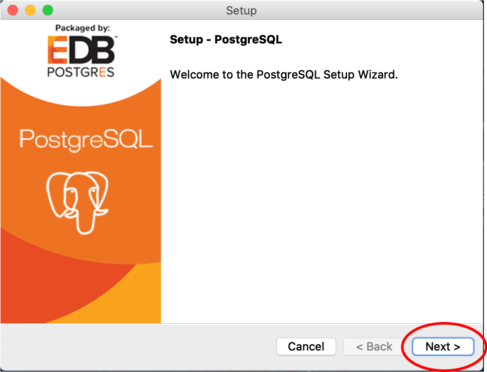

PostgreSQL Set Up
PostgreSQL is an open source relational database system and has the PostGIS geospatial database extension, which was the draw for using this database infrastructure for the OFPE project. All of the data gathered in the OFPE data stream is spatial data from fields that range from tens to hundreds of acres, making the PostGIS extension invaluable in handling and organizing the potentially huge datasets.
The following tutorial describes the process of downloading and setting up PostgreSQL and setting up a local server. This tutorial is not need if the user is using a preexisting database that has been set up in the OFPE format. If so, the user will need the host, username, password, and database driver to connect. After setting up PostgreSQL, proceed to the database creation diagrams and vignette to begin the process of creating a database in the OFPE format. The user may need to proceed to the tutorial for creating shapefiles for farm and field boundaries.
Tutorial
Follow the directions below for preparing your system for the OFPE data pipeline.
1. Go to the PostgreSQL website: https://www.postgresql.org
2. Browse to the ‘Download’ page.
Browse to the ‘Download’ page. There may be multiple routes.
3. Select the link for the appropriate operating system. This tutorial uses the ‘macOS’ download process. Differences to the Windows process will be pointed out.

Choose the operating system that your computer uses.
4. Follow the ‘Download the installer’ hyperlink. This is present on both the ‘macOS’ and ‘Windows’ pages. This link goes to the same place. The EDB installer is selected because it also installs pgAdmin, a useful GUI for interfacing with your PostgreSQL database.

The hyperlink is the same for both macOS (left) and Windows (right).
5. Select the ‘Download’ link for your operating system. It is a good idea to download the latest version. You may need to allow downloads from this website.

The most recent version of PostgreSQL is 12.3 at the time of this tutorial. Select the latest version you see.
6. Open the downloaded installer from your ‘Downloads’ folder. The ‘macOS’ installer is a .dmg and ‘Windows’ installer is a .exe. The opening process may be different in the Windows process than the images below. The user may need to enter their password to allow the download, depending on your system settings.
The Windows download may look different from the images here. Follow the instructions until a similar screen as in Step 7 is seen.
7. Follow the instructions in the PostgreSQL Setup wizard to download the software until the step where a password for the ‘postgres’ superuser (Step 8). This may look different in a Windows system compared to the images below. Use all of the default options.



The Windows screen may look different from the images here. Follow the instructions.
8. You need to supply a password for the ‘postgres’ superuser. This is the superuser that the locally hosted database in the OFPE format uses. Note, you will need to remember this password for future use. Leave the port number as the default 5432 and proceed with the rest of the defaults through the installation.

Remember this password unless you’re a masochist.
This image shows port 5432, but use 5433 for a Mac.


9. Follow this step 9 if you are using a PC. First, open the Stack Builder when prompted, select PostGIS from the Spatial Extensions dropdown, and click through the ensuing pop-ups.
Open the Stack Builder and select your PostgreSQL server from the dropdwon.
Select the PostGIS option in the Spatial Extension dropdown menu.
Select Yes for all ensuing pop-ups.
Select Finish to complete.
9. Follow this step 9 if you are using a Mac. First, open the Stack Builder if prompted. Otherwise, browse to it from /Library/PostgreSQL/12/stackbuilder.app. Select PostGIS from the Spatial Extensions dropdown, and click through the ensuing pop-ups.
Open the Stack Builder and select your PostgreSQL server from the dropdwon.
Select the PostGIS option in the Spatial Extension dropdown menu.
Select Next.
Enter your Master Password.
Hit Next.
Hit Finish when the installation is complete.
And hit Finish in the Stack Builder window.
10. After the installation has completed, there should be a pgAdmin application. This will open the pgAdmin GUI in your preffered web browser. Upon opening, you will need to give a password to be your master password for pgAdmin. This will require inputting a password and selecting “Reset Master Password”. Then select the ‘Servers’ drop down and enter the password for the ‘postgres’ superuser you made in Step 8. The PostgreSQL server dropdown should show the default ‘postgres’ database.
Open the pgAdmin4 application to view your databases and servers.

You will need to select ‘Reset Master Password’ then enter your new master password for pgAdmin and select ‘OK’.

Select the ‘Servers’ drop down in the left hand pane to activate the password pop up. Enter the password from Step 8 and check ‘Save Password’ then ‘OK’. You may or may not see this error message.
The default ‘postgres’ database should be the only database visible.
10. Now, we are ready to create our database. Go to the ‘Object’ tab, select ‘Create’, then ‘Database…’.
Select Object>>Create>>Database.
11. Now, type your desired database name in the ‘Database’ field of the pop-up window. Then click Save. In this example I used a database name called ‘OFPE’.
Provide a database name.
12. Now you are all set up with PostgreSQL with a ‘postgres’ superuser that will be used for creating the OFPE formatted database. Proceed to the database creation diagrams and vignette to begin the process of creating a database in the OFPE format. The user may need to proceed to the tutorial for creating shapefiles for farm and field boundaries.